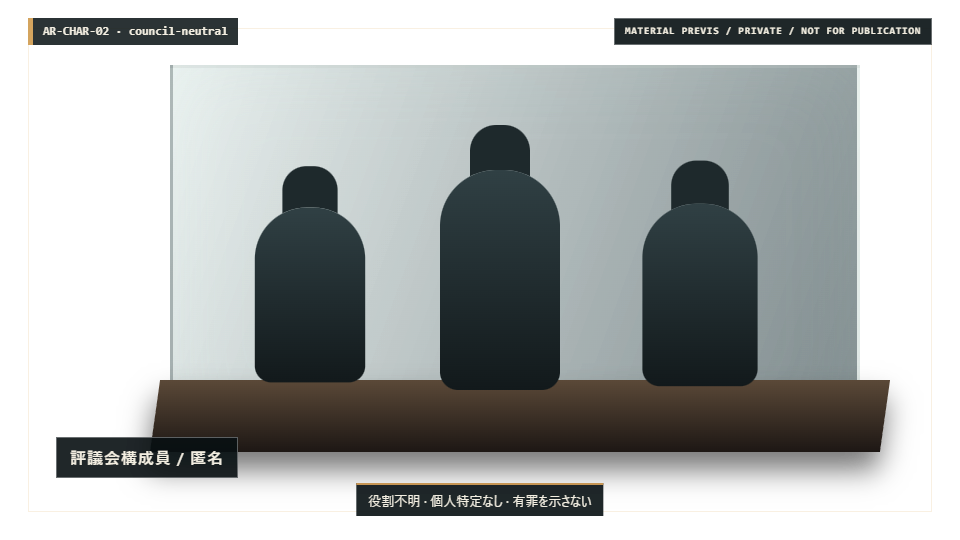
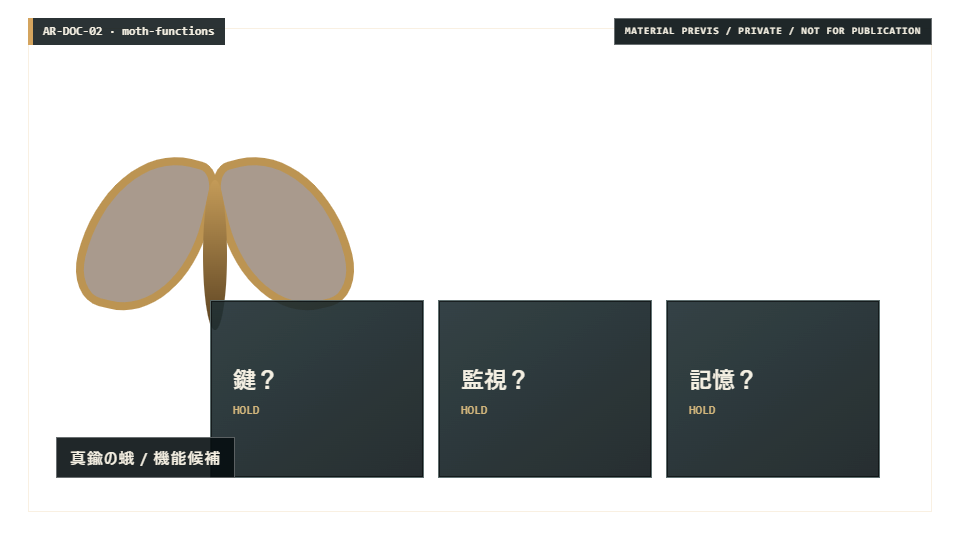
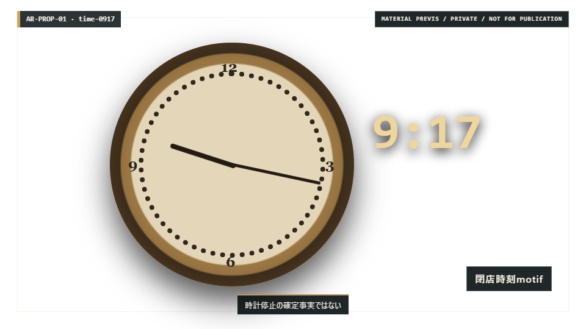

01 / shot-b04-01 · 01:20–01:28
仕切りの向こう
匿名の制度空間を、人間の身体性と建築的な奥行きで検証する。

- Source
- generated_raster
- Timing
- 8秒 · slow_push · hard_cut
- Truth boundary
- 有罪の演技、個人特定、単純な悪役化を避ける。
- State
- candidate-only · default-off · rights not cleared
01 / shot-b04-01 · 01:20–01:28
匿名の制度空間を、人間の身体性と建築的な奥行きで検証する。
02 / shot-b05-02 · 01:58–02:11
蛾を線画記号ではなく、用途未確定の物質的な小道具として検証する。

03 / shot-b02-03 · 00:40–00:50
9:17を示す時計と蛾を、因果を確定しない二つの物質的モチーフとして検証する。

以下は再利用・改稿・変種生成の対象ではありません。新しい3枚が避けるべき署名を確認するためだけの縮小比較です。


